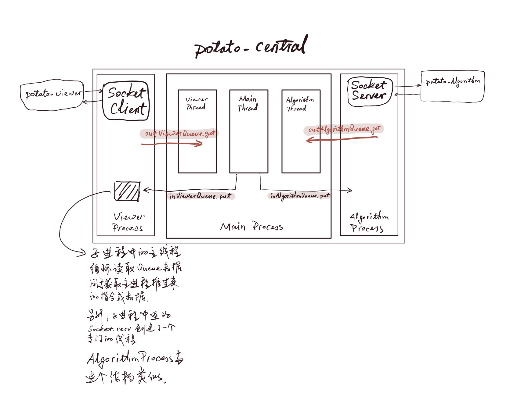
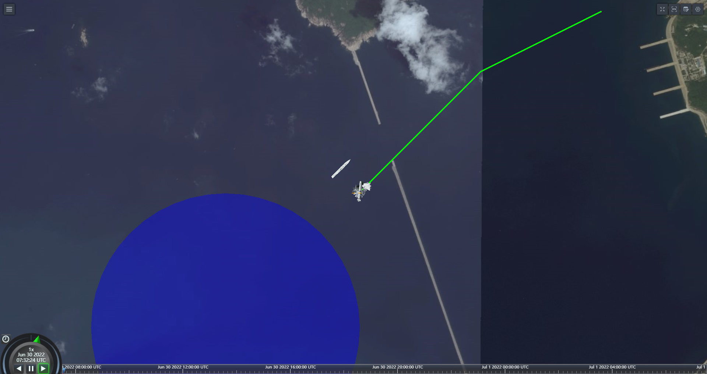
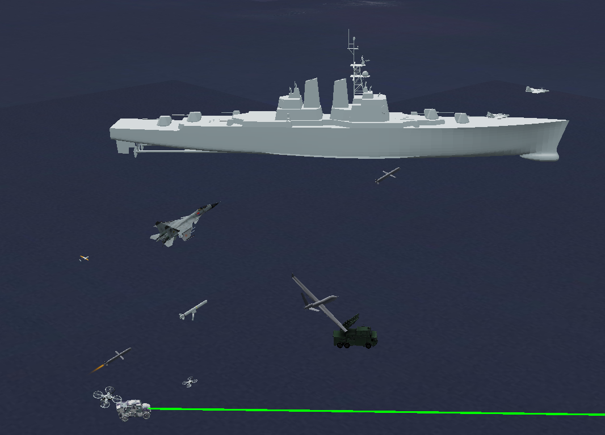
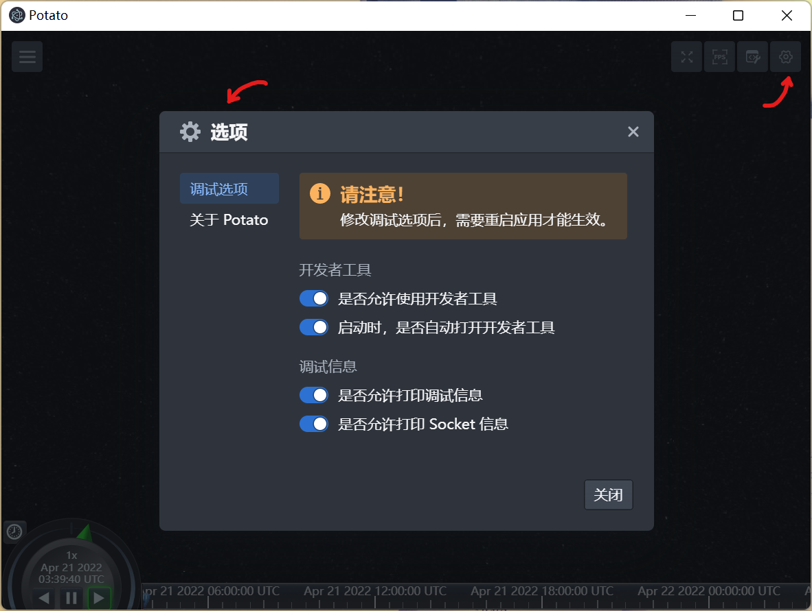

Potato Platform (大型异构集群仿真平台)
Overview
Potato is a large-scale heterogeneous swarm simulation platform developed for the Ministry of Science and Technology project "Collaborative Confrontation Environment for Heterogeneous Unmanned Swarms." Unlike existing platforms that trade off between model fidelity and scale, Potato adopts a Data-Oriented Programming (DOP) paradigm with GPU parallel computing to achieve both realistic nonlinear dynamic models and large-scale simulations.
The platform has been validated with up to 5,000 quadrotors while maintaining nearly constant computational speed. A preprint describing the platform is available on arXiv.
Highlights
Architecture
Potato follows a three-tier modular architecture that decouples visualization, simulation control, and algorithm development:
- Viewer (Display Tier) — A Cesium-based 3D visualization client built with Electron, rendering agents on a real-world map. Communicates via socket on port 7777.
- Central (Control Tier) — Python-based middleware managing multi-process simulation. Spawns
viewer_process,main_process, andalgorithm_processwith thread-level concurrency and queue-based inter-process communication (IPC). - Algorithm (User Tier) — Python interface where researchers implement their algorithms. Connects to the Central tier on port 7000.

Multi-process architecture of the Potato platform.Supported Agents
Potato supports a wide range of heterogeneous agents with realistic 3D models and nonlinear dynamics:
- Quadrotor — Nonlinear dynamics with GPU-batched simulation
- Fixed-wing UAV — Complete 6-DOF model with aerodynamics
- Ground Vehicle — Magic formula tire model, path following
- Missile — Air-to-air & air-to-ground variants
- Tilt-rotor — Transition-capable VTOL model
- Ship — Surface vessel dynamics
My Contribution — Ground Vehicle
I was responsible for developing the ground vehicle dynamics model, path follower, and autopilot controller for the Potato platform — covering the full pipeline from physics simulation to closed-loop control. The dynamics model is adapted from ETH's AMZ racing team research, modified to integrate with Potato's multi-agent message-passing architecture.
Dynamic Model
The vehicle dynamics use a bicycle model with Pacejka magic formula tire forces, parameterized after the Hummer H2 (mass 3,000 kg, wheelbase 3.12 m). The state vector includes position, heading, body-frame velocities, and yaw rate. Control inputs are steering angle and normalized throttle.
class CarDynamics:
def __init__(self, ts):
self._ts_sim = ts
self._state = np.array([
[CAR.pos_x0], # 0 world x
[CAR.pos_y0], # 1 world y
[CAR.psi0], # 2 heading angle
[CAR.v_x0], # 3 body-x velocity
[CAR.v_y0], # 4 body-y velocity
[CAR.r0], # 5 yaw rate
])
def _forces_moments(self, delta: MsgDelta):
v_x = self._state.item(3)
v_y = self._state.item(4)
r = self._state.item(5)
# Magic formula tire forces
if v_x == 0:
alpha_f = -delta.delta_sa
alpha_r = 0
else:
alpha_f = math.atan((v_y + CAR.l_f * r) / v_x) - delta.delta_sa
alpha_r = math.atan((v_y - CAR.l_r * r) / v_x)
ff_lat = CAR.D * math.sin(CAR.C * math.atan(CAR.B * alpha_f))
fr_lat = CAR.D * math.sin(CAR.C * math.atan(CAR.B * alpha_r))
f_lon = CAR.C_m1 * delta.Th - CAR.C_r2 * v_x**2
fx = f_lon - ff_lat * math.sin(delta.delta_sa)
fy = fr_lat + ff_lat * math.cos(delta.delta_sa)
r_target = delta.delta_sa * v_x / (CAR.l_f + CAR.l_r)
tau_tv = (r_target - r) * CAR.P_tv
Mz = (CAR.l_f * ff_lat * math.cos(delta.delta_sa)
- CAR.l_r * fr_lat + tau_tv)
return fx, fy, MzPath Following
The path follower implements vector-field guidance for both straight-line and orbit (circular) paths. It computes the desired course angle based on the cross-track error and approach angle, then sends speed and course commands to the autopilot.
class PathFollower:
def __init__(self):
self.chi_inf = np.radians(75.0)
self.k_path = 0.05
self.k_orbit = 10.0
def _follow_straight_line(self, path, state):
q = path.line_direction
r = path.line_origin
pn, pe = state.north, state.east
self.autopilot_commands.speed_command = path.airspeed
chi_q = wrap(np.arctan2(q.item(1), q.item(0)), state.chi)
e_py = (-np.sin(chi_q) * (pn - r.item(0))
+ np.cos(chi_q) * (pe - r.item(1)))
self.autopilot_commands.course_command = (
chi_q - self.chi_inf * (2.0 / np.pi) * np.arctan(self.k_path * e_py)
)
def _follow_orbit(self, path, state):
direction = 1.0 if path.orbit_direction == "CW" else -1.0
cn, ce = path.orbit_center.item(0), path.orbit_center.item(1)
pn, pe = state.north, state.east
d = np.sqrt((pn - cn)**2 + (pe - ce)**2)
phi_var = wrap(np.arctan2(pe - ce, pn - cn), state.chi)
orbit_error = (d - path.orbit_radius) / path.orbit_radius
self.autopilot_commands.speed_command = path.airspeed
self.autopilot_commands.course_command = (
phi_var + direction * (np.pi / 2.0 + np.arctan(self.k_orbit * orbit_error))
)Autopilot — PID Control
The autopilot uses two independent PID controllers with anti-windup: one for course tracking (steering) and one for speed tracking (throttle). A low-pass differentiator filter (time constant σ = 0.05 s) smooths the derivative term.
class Autopilot:
def __init__(self, ts_control):
self.course_from_steering = PIDControl(
kp=AP.course_kp, ki=AP.course_ki, kd=AP.course_kd,
Ts=ts_control, limit=np.radians(30)
)
self.speed_from_throttle = PIDControl(
kp=AP.speed_kp, ki=AP.speed_ki, kd=AP.speed_kd,
Ts=ts_control, limit=1
)
def update(self, cmd: MsgAutopilot, state: MsgState):
# Lateral: course → steering angle
chi_c = wrap(cmd.course_command, state.chi)
delta_sa = self.course_from_steering.update(chi_c, state.chi)
# Longitudinal: speed → throttle
delta_th = self.speed_from_throttle.update(cmd.speed_command, state.Vg)
return MsgDelta(delta_sa=delta_sa, Th=delta_th)Platform Demo
The Potato Viewer renders agents on a real-world map using the Cesium engine. Below are screenshots showing the 3D visualization of heterogeneous agents in simulation:

3D visualization of agents on Cesium globe
Multi-agent simulation with real-time state trackingPlatform Interface
The Potato Viewer provides an intuitive configuration interface for customizing display settings, debug logging, and socket communication:

Potato Viewer configuration panel (v2.3+).Publication
arXiv:2308.12698, 2023
Presented a DOP-based simulator using GPU parallel computing (PyTorch) for large-scale swarm robotic simulations with realistic nonlinear dynamic models.